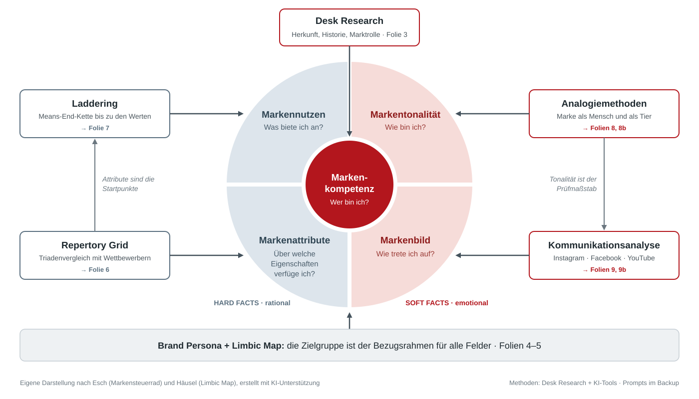

„Braucht“ zeigt, worauf ein Paket wartet. Die Stundenzahlen sind grobe Schätzungen ohne eigene Folien und gemeinsame Termine.
| Nr. | Paket | Was ist zu tun? | Ergebnis | Std. | Braucht |
|---|---|---|---|---|---|
| AP 1 | Markenkompetenz & WettbewerberFolie 3 | Desk Research zu Herkunft, Historie, Eigentümer, Kennzahlen, Marktrolle und Selbstverständnis der Marke. 5–6 Wettbewerber festlegen. | Faktentabelle mit Quellen, Timeline, Wettbewerbsset | 3–4 | Marke |
| AP 2 | Brand PersonaFolie 4 | Daten zur Zielgruppe sammeln (z. B. Statista, VuMA, b4p, ARD/ZDF-Medienstudie). Steckbrief mit Geografie, Soziodemografie, Kaufverhalten, Mediennutzung und Psychografie. Bild per KI. | Persona-Steckbrief, Daten und Annahmen getrennt | 5–6 | AP 1 |
| AP 3 | Limbic MapFolie 5 | Persona und Marke auf der Limbic Map verorten (Balance, Dominanz, Stimulanz), Limbic Type bestimmen, Folgen für die Kommunikation ableiten. | Limbic-Map-Grafik + 3 Konsequenzen | 2 | AP 2 |
| AP 4 | Repertory GridFolie 6 | Marke, 5 Wettbewerber und eine Idealmarke in Dreiergruppen vergleichen lassen: mit KI-simulierten Befragten und 3–5 echten Kurzinterviews. Auswertung in Excel. | Polaritätenprofil, 3–5 Markenattribute | 6–7 | AP 1, AP 2 |
| AP 5 | LadderingFolie 7 | Ausgehend von den Attributen immer wieder fragen: „Warum ist dir das wichtig?“ – bis zu den Werten. Implikationsmatrix und Hierarchical Value Map. | HVM-Grafik, funktionaler und psychosozialer Markennutzen | 4 | AP 4 |
| AP 6 | AnalogienFolie 8 | „Wenn die Marke ein Mensch / ein Tier wäre …“ – für die Marke und 2 Wettbewerber. Persönlichkeit, Beziehung und Emotionen ableiten. | Markentonalität | 2–3 | AP 2 |
| AP 7 | KommunikationsanalyseFolie 9 | Instagram, Facebook, YouTube: je 15–20 Posts erfassen und codieren, Engagement-Rate rechnen. Corporate Design, Logo, Slogan, Schlüsselbilder, Bildwelt. Passt der Auftritt zur Tonalität? | Markenbild + Lücken zwischen Identität und Auftritt | 6–7 | Marke, AP 6 |
| AP 8 | Markensteuerrad & EmpfehlungenFolien 10–11 | Gemeinsame Synthese vorbereiten und leiten: Steuerrad füllen, Positionierung in einem Satz (seit 21.10.2026; „Markenkern“ heißt wie in der Vorlesung die Mitte des Rads), 2–3 konkrete Empfehlungen ableiten. | Fertiges Steuerrad, Fazit-Folie | 3 | alle Analysen |
| AP 9 | Folienmaster & Gesamtdeckalle Folien | Folienmaster mit Farben und Schriften bauen, am Ende alle Folien zusammenführen und auf einheitliches Design prüfen. | Master bis Mo, 19.10.; fertiges Deck | 3 | – |
| AP 10 | Backup & KI-NachweisBackup-Folien | Prompts aller einsammeln, Vorgehen begründen (Textbaustein vorhanden), Quellenverzeichnis und Rohdaten fürs Backup zusammenstellen. | Backup B1–B7, vollständiger KI-Nachweis | 3 | Beiträge aller |
Die Pakete sind so gebündelt, dass zusammengehörige Arbeit in einer Hand bleibt und jedes Bündel ungefähr gleich viel Aufwand macht. Wer ein Bündel übernimmt, präsentiert auch dessen Folien – so kann jede Person Rückfragen zu ihrem Teil selbst beantworten.
Passt, wenn du gern recherchierst, Quellen prüfst und Dinge sauber dokumentierst.
Achtung: Dieses Bündel liefert als Erstes – die Persona wird schon am Fr, 16.10. gebraucht.
Passt, wenn du gern mit Leuten sprichst und keine Angst vor Excel hast.
Warum zusammen: Alle drei Methoden arbeiten mit denselben Befragten, und die Attribute aus dem Repertory Grid sind die Startpunkte fürs Laddering.
Passt, wenn du ein Auge für Gestaltung und Social Media hast.
Warum zusammen: Die Kommunikationsanalyse zeigt die Lücken, aus denen die Empfehlungen entstehen.
Wer zu spät liefert, blockiert die anderen. Diese Termine sind deshalb fix; wie man die Tage dazwischen einteilt, ist jeder Person selbst überlassen.
| Wann | Was | Wer |
|---|---|---|
| Mi, 14.10. | Bündel im Gruppenchat gewählt · Kickoff (30 Min.): Marke aus der Liste wählen, Wettbewerber festlegen, offene Fragen klären | alle |
| Fr, 16.10. | Persona-Kurzfassung an Bündel B (Grundlage für die simulierten Befragten) | A→B |
| Sa, 17.10. | Ergebnis der Limbic Map (Persona und Marke) an Bündel C | A→C |
| Mo, 19.10. | Folienmaster an alle · 3–5 Markenattribute aus dem Repertory Grid an alle | C B |
| Di, 20.10. | Zwischenstand (45 Min.): Persona, Attribute, erste Befunde zum Markenbild | alle |
| Mi, 21.10. | Markentonalität aus den Analogien an Bündel C | B→C |
| Do, 22.10. | Synthese (2 Std.): Markensteuerrad füllen, Positionierung, Empfehlungen – jede Person bringt ihre Ergebnisse als Stichworte mit Quelle mit | alle, Leitung C |
| Fr, 23.10. | Eigene Folien fertig im Master | alle |
| Sa, 24.10. | Alle KI-Prompts eingetragen · Gesamtdeck zusammengeführt | alle→A C |
| So, 25.10. | Generalprobe (1 Std.): zweimal mit Stoppuhr durchgehen, Rückfragen üben | alle |
| Mo, 26.10. | Präsentation | alle |
ki-nachweis/vorlage-ki-nutzung.md), Abgabe Fr 23.10. an Yannick.| Kriterium | Gewicht | Was das für uns heißt |
|---|---|---|
| Problemverständnis & Fokussierung | 15 % | Leitfrage klar, nur zeigen, was ins Steuerrad einfließt |
| Anwendung von Konzepten & Modellen | 20 % | Modelle fachlich korrekt, Methode → Feld sichtbar |
| Analyse & Argumentation | 20 % | Jede Aussage im Steuerrad auf eine Analyse zurückführbar |
| Qualität der Lösung / Empfehlung | 15 % | 2–3 konkrete, begründete Empfehlungen |
| Vermittlung & Präsentationsstil | 7,5 % | frei sprechen, Rückfragen souverän beantworten |
| Visualisierung & Foliengestaltung | 7,5 % | wenig Text, Grafiken statt Tabellen, einheitlicher Master |
| Individuelle Reflexion (je Person) | 15 % | Tiefe, kritische Selbstbewertung, Lerntransfer |
Laut Folie 58 hat der Bereich „Präsentation“ 30 %, die beiden Kriterien darunter ergeben aber nur 15 % – das klären wir beim Prof.